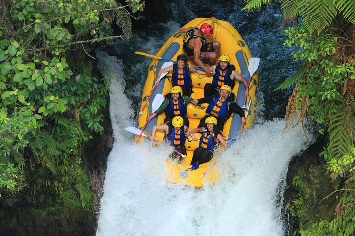
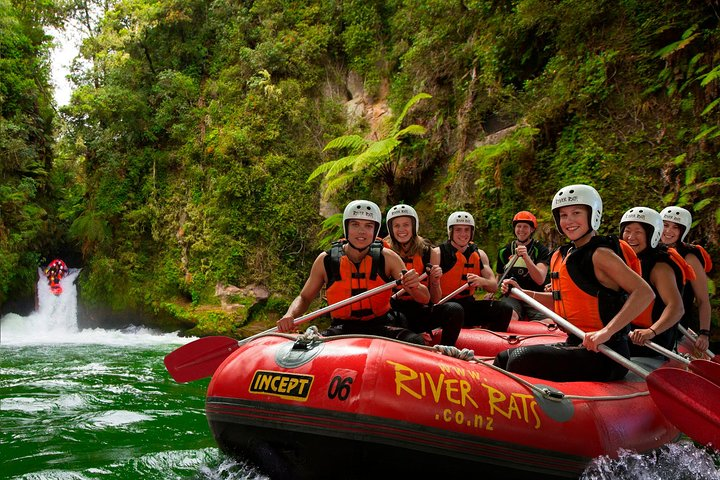

紐西蘭第一旅遊品牌
-
小團體制度 我們是小團體旅遊為主，不需要併團且提供最多可以接受至16位，來去為您帶來更好的旅遊體驗。
-
多元化選擇 您可以從不同特色類別的行程包含60多種活動中進行選擇，以體驗紐西蘭當地的風情並加入到你的行程中。
-
彈性預約制度 在您正式出發的30天以前，您可以無限制的透過會員登入去隨時免費更改或加購任何行程。
-
百分百KIWI 我們是紐西蘭當地所運營的團隊，我們的宗旨是帶領遊客體驗100%的當地特色及活動。
 2021年最熱門行程
2021年最熱門行程

-
 7天
冒險刺激
7天
冒險刺激
-
7天 冰雪奇緣
-
14天 冒險刺激
-
7天 知性文化
7天北島文化旅
 4.5
4.5
價格 $1,399 NZD
深入了解紐西蘭的毛利戰士文化、欣賞傳統藝術舞蹈表演–古毛利人開戰前用來鼓舞戰士的戰舞文化(Haka舞)，感受傳統手工木製建築及品嘗特有傳統特色美食。
-
7天 冰雪奇緣
-
7天 浪漫雙人
熱門活動選項

歡迎通過加購活動使你的旅遊更加精采
點擊愛心圖標來立即加入到你的收藏吧
-
奧克蘭天空塔 $99 -
塔瑪基毛利村莊 $50 -
魔界「葛蘭諾基」 $199 -
卓越山-極限滑雪 $299 -

提卡波湖「星空保護區」 $149 -
地熱谷溫泉村 $99 -
極限挑傘 $399 -
 末日火山-泛舟 $119
選購流程

-
步驟一: 選擇你的行程類別
選擇你的行程類別，每一個行程都包含了住宿, 交通, 導遊和餐點
-
步驟二: 訂製你的行程
如果對於你的行程覺得玩的不夠盡興的話，你可以從其他60多種活動進行客製化的選擇加購到你的行程當中。
-
步驟三: 線上預訂及管理行程
線上預約行程時，只需先付押金$300NZD。在行程30天之前您都可以透過會員中心隨時免費更改或添購行程。
讓你的IG出現前所未有的景色吧
 Follow Us
Follow Us
- 
-

-